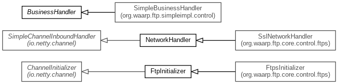

-
Class Summary
| Class |
Description |
| BusinessHandler |
This class is to be implemented in order to allow Business actions according to FTP service
|
| FtpControlStringDecoder |
Exactly same as StringDecoder from Netty
|
| FtpControlStringEncoder |
Exactly same as StringEncoder from Netty
|
| FtpPipelineFactory |
Pipeline factory for Control command connection
|
| NetworkHandler |
Main Network Handler (Control part) implementing RFC 959, 775, 2389, 2428, 3659 and supports XCRC
and XMD5 commands.
|
Package org.waarp.ftp.core.control Description
Classes implementing Control connections.
The internal logic is the following:
- When a connection is opened for control network:
It first creates the default startup command (ConnectionCommand), then it answers it is ok to
accept identification (which is implied by ConnectionCommand).
- Each time a command is received:
- Parsing the command
in order to find the corresponding class that implements it.
- Checking if the command is legal now
such that no transfer is currently running except
if is a special command (like QUIT or ABORT).
- Checking if the command is legal from workflow
that is to say the previous command
allows the usage of the current command (for instance, no transfer command is allowed if the
authentication is not finished).
- Running the command
with executing a pre and post operation on business handler.
- Making the final answer of the command
(in some cases this is a partial answer like
ready to transfer)
- When an exception occurs
the connection will be closed. - When the connection is
closed
all attributes are cleaned.